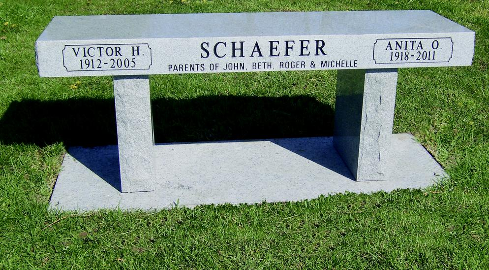

Bevels
Bevel markers are low, but not flat. The come in single or double sizes and can be personalized with symbols or inscriptions.

What we make
We have the expertise, ability, and creativity to handle any project of request.
Throughout the ages, people have chosen to commemorate the lives of those loved, revered and respected. The common thread which has bridged civilizations and generations has been mankind’s desire to remember loved ones by erecting monuments
When the time comes to commemorate the life of someone very special, or perhaps to plan ahead for yourself, many factors should be considered. You will be purchasing something that, quite literally, will last forever.
From the widest variety of colors of granite the world has to offer, to unique shapes from a shamrock to a teddy bear, our memorials are as unique as the people they are for.
From the simple attractiveness of reasonable markers to the elegance of a private family mausoleum, Brannon Monument Co. has the expertise, ability and creativity to handle any project of request.
In creating a memorial, we reflect on the life of the individual(s) who it is for. The positive remembrance or affirmation of one’s life can inspire anything from the overall design, shape, color or ornamentation. From listing children’s names or a wedding date to religious or professional symbols and even lettering styles, each memorial can be as unique and special as the person who inspires its creation
With regard to style, cemetery memorials range from simple flat, beveled or slant markers that lie on the ground, to elaborate upright monuments. Where cemetery regulations allow, memorials may also include crosses, statues, vases, and remembrance lamps.
Most memorials are made from granite. This stone is durable and is available in a wide range of colors, including black, grey, and a variety of reds, pinks, browns, greens, and blues. Other material used for memorialization include bronze and marble. Bronze is often used for flat markers and for ornamentation to granite memorials.
Similar to jewelry or clothing, granite comes in different quality levels, some of which may not be suitable for cemetery memorials. We are able to show you fine quality granites that accept different styles or lettering and ornamentation. As with many other things we purchase, keep in mind the features of quality, appearance, service and overall value in your consideration.
Our display has an extensive array of monuments. This allows you to see a variety of colors, shapes and lettering styles that are available. Pictures or brochures do not always adequately depict these important differences.
Bevel markers are low, but not flat. The come in single or double sizes and can be personalized with symbols or inscriptions.
Slant markers are midway in height between the lower bevel markers and the larger upright monuments. They offer sufficient space for highly creative personalized design.
Flat markers lie flat to the ground. Their small size naturally restricts the decoration, although we can still personalize them to your desires. They are harder to locate in the cemetery.
Other styles can include full-size grave ledgers, crosses, and garden memorials such as benches or sundials.